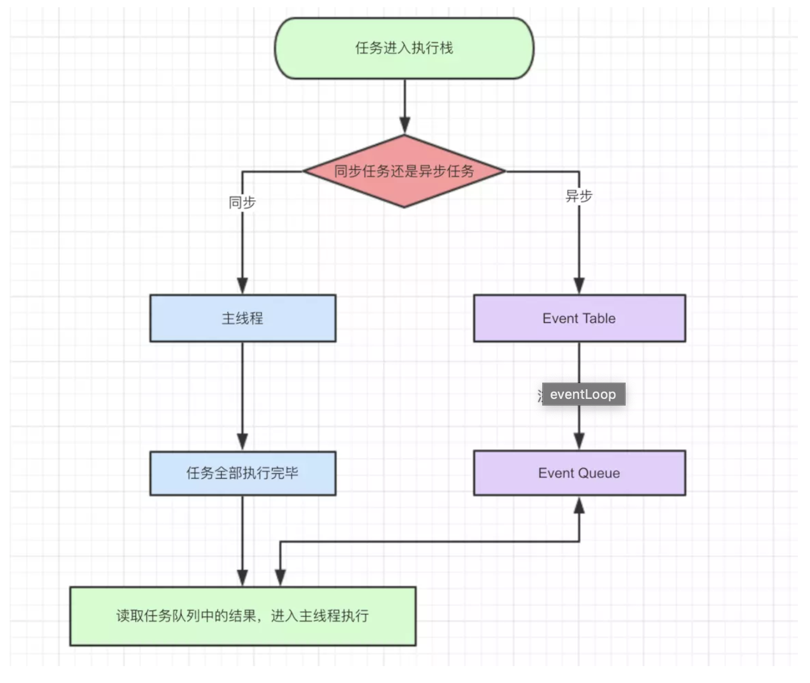
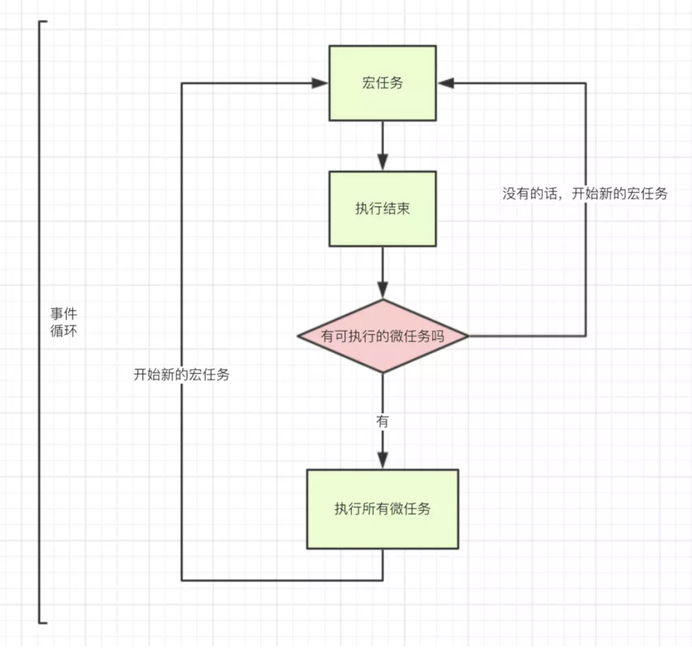

<!DOCTYPE html>
<html>
<head><meta name="generator" content="Hexo 3.8.0">
  <meta charset="utf-8">
  
  <title>js运行机制 | guowj</title>
  <meta name="viewport" content="width=device-width, initial-scale=1, maximum-scale=1">
  
  <meta name="keywords" content="js运行机制">
  
  
  
  
  <meta name="description" content="&amp;nbsp;&amp;nbsp;&amp;nbsp;&amp;nbsp;&amp;nbsp;&amp;nbsp;本文主要是记录下自己对js运行机制的理解。js是一门单线程语言。也就是说，同一时间只能做一件事。JS的主要用途是与用户互动以及操作 DOM。这决定了它只能是单线程，否则会带来很复杂的同步问题。假定js同时有两个线程，一个线程在某个 DOM 节点上添加内容，另一个线程删除了这个节点，那么浏览器应该以哪个线程为准呢？所以为了避免">
<meta name="keywords" content="js运行机制">
<meta property="og:type" content="article">
<meta property="og:title" content="js运行机制">
<meta property="og:url" content="https://gwjacqueline.github.io/js运行机制/index.html">
<meta property="og:site_name" content="guowj">
<meta property="og:description" content="&amp;nbsp;&amp;nbsp;&amp;nbsp;&amp;nbsp;&amp;nbsp;&amp;nbsp;本文主要是记录下自己对js运行机制的理解。js是一门单线程语言。也就是说，同一时间只能做一件事。JS的主要用途是与用户互动以及操作 DOM。这决定了它只能是单线程，否则会带来很复杂的同步问题。假定js同时有两个线程，一个线程在某个 DOM 节点上添加内容，另一个线程删除了这个节点，那么浏览器应该以哪个线程为准呢？所以为了避免">
<meta property="og:locale" content="zh-CN">
<meta property="og:image" content="https://gwjacqueline.github.io/images/eventLoop.png">
<meta property="og:image" content="https://gwjacqueline.github.io/images/Macrotask.png">
<meta property="og:updated_time" content="2019-07-11T06:23:54.550Z">
<meta name="twitter:card" content="summary">
<meta name="twitter:title" content="js运行机制">
<meta name="twitter:description" content="&amp;nbsp;&amp;nbsp;&amp;nbsp;&amp;nbsp;&amp;nbsp;&amp;nbsp;本文主要是记录下自己对js运行机制的理解。js是一门单线程语言。也就是说，同一时间只能做一件事。JS的主要用途是与用户互动以及操作 DOM。这决定了它只能是单线程，否则会带来很复杂的同步问题。假定js同时有两个线程，一个线程在某个 DOM 节点上添加内容，另一个线程删除了这个节点，那么浏览器应该以哪个线程为准呢？所以为了避免">
<meta name="twitter:image" content="https://gwjacqueline.github.io/images/eventLoop.png">
  
    <link rel="alternate" href="/atom.xml" title="guowj" type="application/atom+xml">
  

  

  <link rel="icon" href="/css/images/mylogo.png">
  <link rel="apple-touch-icon" href="/css/images/mylogo.png">
  
    <link href="//fonts.googleapis.com/css?family=Source+Code+Pro" rel="stylesheet" type="text/css">
  
  <link href="https://fonts.googleapis.com/css?family=Open+Sans|Montserrat:700" rel="stylesheet" type="text/css">
  <link href="https://fonts.googleapis.com/css?family=Roboto:400,300,300italic,400italic" rel="stylesheet" type="text/css">
  <link href="//netdna.bootstrapcdn.com/font-awesome/4.0.3/css/font-awesome.css" rel="stylesheet">
  <style type="text/css">
    @font-face{font-family:futura-pt; src:url("../css/fonts/FuturaPTBold.otf") format("woff");font-weight:500;font-style:normal;}
    @font-face{font-family:futura-pt-light; src:url("../css/fonts/FuturaPTBook.otf") format("woff");font-weight:lighter;font-style:normal;}
    @font-face{font-family:futura-pt-italic; src:url("../css/fonts/FuturaPTBookOblique.otf") format("woff");font-weight:400;font-style:italic;}
}

  </style>
  <link rel="stylesheet" href="/css/style.css">

  <script src="/js/jquery-3.1.1.min.js"></script>
  <script src="/js/bootstrap.js"></script>

  <!-- Bootstrap core CSS -->
  <link rel="stylesheet" href="/css/bootstrap.css">

  
    <link rel="stylesheet" href="/css/dialog.css">
  

  

  
    <link rel="stylesheet" href="/css/header-post.css">
  

  
  
  
    <link rel="stylesheet" href="/css/vdonate.css">
  

</head>
</html>


  <body data-spy="scroll" data-target="#toc" data-offset="50">


  
  <div id="container">
    <div id="wrap">
      
        <header>

    <div id="allheader" class="navbar navbar-default navbar-static-top" role="navigation">
        <div class="navbar-inner">
          
          <div class="container"> 
            <button type="button" class="navbar-toggle" data-toggle="collapse" data-target=".navbar-collapse">
              <span class="sr-only">Toggle navigation</span>
              <span class="icon-bar"></span>
              <span class="icon-bar"></span>
              <span class="icon-bar"></span>
            </button>

            
              <a class="brand" style="
                 margin-top: 0px;" href="#" data-toggle="modal" data-target="#myModal">
                  
              </a>
            
            
            <div class="navbar-collapse collapse">
              <ul class="hnav navbar-nav">
                
                  <li> <a class="main-nav-link" href="/">首页</a> </li>
                
                  <li> <a class="main-nav-link" href="/archives">归档</a> </li>
                
                  <li> <a class="main-nav-link" href="/categories">分类</a> </li>
                
                  <li> <a class="main-nav-link" href="/tags">标签</a> </li>
                
                  <li><div id="search-form-wrap">

    <form class="search-form">
        <input type="text" class="ins-search-input search-form-input" placeholder>
        <button type="submit" class="search-form-submit"></button>
    </form>
    <div class="ins-search">
    <div class="ins-search-mask"></div>
    <div class="ins-search-container">
        <div class="ins-input-wrapper">
            <input type="text" class="ins-search-input" placeholder="请输入关键词...">
            <span class="ins-close ins-selectable"><i class="fa fa-times-circle"></i></span>
        </div>
        <div class="ins-section-wrapper">
            <div class="ins-section-container"></div>
        </div>
    </div>
</div>
<script>
(function (window) {
    var INSIGHT_CONFIG = {
        TRANSLATION: {
            POSTS: '文章',
            PAGES: '页面',
            CATEGORIES: '分类',
            TAGS: '标签',
            UNTITLED: '(无标题)',
        },
        ROOT_URL: '/',
        CONTENT_URL: '/content.json',
    };
    window.INSIGHT_CONFIG = INSIGHT_CONFIG;
})(window);
</script>
<script src="/js/insight.js"></script>

</div></li>
            </ul></div>
          </div>
                
      </div>
    </div>

</header>


      
            
      <div id="content" class="outer">
        
          <section id="main" style="float:none;"><article id="post-js运行机制" style="width: 75%; float:left;" class="article article-type-post" itemscope itemprop="blogPost">
  <div id="articleInner" class="article-inner">
    
    
      <header class="article-header">
        
  
    <h1 class="thumb" itemprop="name">
      js运行机制
    </h1>
  

      </header>
    
    <div class="article-meta">
      
	<a href="/js运行机制/" class="article-date">
	  <time datetime="2019-07-07T02:18:03.000Z" itemprop="datePublished">2019-07-07</time>
	</a>

      
    <a class="article-category-link" href="/categories/js/">js</a>

      
	<a class="article-views">
	<span id="busuanzi_container_page_pv">
		阅读量<span id="busuanzi_value_page_pv"></span>
	</span>
	</a>

      

    </div>
    <div class="article-entry" itemprop="articleBody">
      
        <blockquote>
<p>&nbsp;&nbsp;&nbsp;&nbsp;&nbsp;&nbsp;本文主要是记录下自己对<code>js</code>运行机制的理解。<code>js</code>是一门单线程语言。也就是说，同一时间只能做一件事。<code>JS</code>的主要用途是与用户互动以及操作 DOM。这决定了它只能是单线程，否则会带来很复杂的同步问题。假定<code>js</code>同时有两个线程，一个线程在某个 DOM 节点上添加内容，另一个线程删除了这个节点，那么浏览器应该以哪个线程为准呢？所以为了避免复杂性，提高效率，就决定了<code>js</code>是一门单线程语言，这已经成了这门语言的核心特征。<code>Event Loop</code>是 javascript 的执行机制。</p>
</blockquote>
<a id="more"></a>
<h2 id="js-是如何处理任务"><a href="#js-是如何处理任务" class="headerlink" title="js 是如何处理任务"></a>js 是如何处理任务</h2><p>&nbsp;&nbsp;&nbsp;&nbsp;&nbsp;&nbsp;<code>js</code>中所有任务可以分成两种，一种是同步任务，一种是异步任务。同步任务指的是，在主线程上排队执行的任务，只有前一个任务执行完毕，才能执行后一个任务；异步任务指的是，不进入主线程、而进入”任务队列”（task queue）的任务，只有”任务队列”通知主线程，某个异步任务可以执行了，该任务才会进入主线程执行。</p>
<div align="center"><br>  <br></div>

<p>具体来说, <code>js</code>的处理任务机制如下：</p>
<p>（1）同步和异步任务分别进入不同的执行”场所”，同步的进入主线程，异步的进入 Event Table 并注册函数。</p>
<p>（2）当指定的事情完成时，Event Table 会将这个函数移入 Event Queue。</p>
<p>（3）主线程内的任务执行完毕为空，会去 Event Queue 读取对应的函数，进入主线程执行。</p>
<p>（4）上述过程会不断重复，也就是常说的 Event Loop(事件循环)。</p>
<p>下面我们来看一段代码帮助我们更好的理解：</p>
<figure class="highlight javascript"><table><tr><td class="gutter"><pre><span class="line">1</span><br><span class="line">2</span><br><span class="line">3</span><br><span class="line">4</span><br><span class="line">5</span><br><span class="line">6</span><br></pre></td><td class="code"><pre><span class="line"><span class="built_in">console</span>.log(<span class="number">1</span>);</span><br><span class="line">setTimeout(<span class="function"><span class="keyword">function</span>(<span class="params"></span>) </span>&#123;</span><br><span class="line">    <span class="built_in">console</span>.log(<span class="string">"我是定时器"</span>);</span><br><span class="line">&#125;, <span class="number">0</span>);</span><br><span class="line"><span class="built_in">console</span>.log(<span class="number">2</span>);</span><br><span class="line"><span class="comment">//输出结果：1,2,我是定时器</span></span><br></pre></td></tr></table></figure>
<p>(1) 进入主线程，遇到<code>console.log</code>,输出 1</p>
<p>(2) 遇到<code>setTimeout</code>,其回调函数被分发到 Event Queue 中。</p>
<p>(3) 遇到<code>console.log(2)</code>，输出 2。</p>
<p>(4) 主线程内的任务执行完毕为空，会去 Event Queue 读取对应的函数，进入主线程执行</p>
<h2 id="微任务-Microtask-与宏任务-Macrotask"><a href="#微任务-Microtask-与宏任务-Macrotask" class="headerlink" title="微任务(Microtask)与宏任务(Macrotask)"></a>微任务(Microtask)与宏任务(Macrotask)</h2><p>&nbsp;&nbsp;&nbsp;&nbsp;&nbsp;&nbsp;异步任务分为宏任务和微任务，宏任务队列可以有多个，微任务队列只有一个。</p>
<ul>
<li>宏任务包括：script(全局任务), setTimeout, setInterval, setImmediate, I/O, UI rendering。</li>
<li>微任务包括: new Promise().then(回调), process.nextTick, Object.observe(已废弃), MutationObserver(html5 新特性)</li>
</ul>
<div align="center"><br>  <br></div>

<p>&nbsp;&nbsp;&nbsp;&nbsp;&nbsp;&nbsp;当某个宏任务队列的中的任务全部执行完以后,会查看是否有微任务队列。如果有，先执行微任务队列中的所有任务，如果没有，就查看是否有其他宏任务队列。</p>
<p>接下来我们来看个复杂的例子来彻底理解下 js 的运行机制</p>
<figure class="highlight javascript"><table><tr><td class="gutter"><pre><span class="line">1</span><br><span class="line">2</span><br><span class="line">3</span><br><span class="line">4</span><br><span class="line">5</span><br><span class="line">6</span><br><span class="line">7</span><br><span class="line">8</span><br><span class="line">9</span><br><span class="line">10</span><br><span class="line">11</span><br><span class="line">12</span><br><span class="line">13</span><br><span class="line">14</span><br><span class="line">15</span><br><span class="line">16</span><br><span class="line">17</span><br><span class="line">18</span><br><span class="line">19</span><br><span class="line">20</span><br><span class="line">21</span><br><span class="line">22</span><br><span class="line">23</span><br><span class="line">24</span><br><span class="line">25</span><br><span class="line">26</span><br><span class="line">27</span><br><span class="line">28</span><br><span class="line">29</span><br><span class="line">30</span><br><span class="line">31</span><br><span class="line">32</span><br><span class="line">33</span><br><span class="line">34</span><br><span class="line">35</span><br><span class="line">36</span><br><span class="line">37</span><br></pre></td><td class="code"><pre><span class="line"><span class="built_in">console</span>.log(<span class="string">"1"</span>);</span><br><span class="line"></span><br><span class="line">setTimeout(<span class="function"><span class="keyword">function</span>(<span class="params"></span>) </span>&#123;</span><br><span class="line">    <span class="built_in">console</span>.log(<span class="string">"2"</span>);</span><br><span class="line">    process.nextTick(<span class="function"><span class="keyword">function</span>(<span class="params"></span>) </span>&#123;</span><br><span class="line">        <span class="built_in">console</span>.log(<span class="string">"3"</span>);</span><br><span class="line">    &#125;);</span><br><span class="line">    <span class="keyword">new</span> <span class="built_in">Promise</span>(<span class="function"><span class="keyword">function</span>(<span class="params">resolve</span>) </span>&#123;</span><br><span class="line">        <span class="built_in">console</span>.log(<span class="string">"4"</span>);</span><br><span class="line">        resolve();</span><br><span class="line">    &#125;).then(<span class="function"><span class="keyword">function</span>(<span class="params"></span>) </span>&#123;</span><br><span class="line">        <span class="built_in">console</span>.log(<span class="string">"5"</span>);</span><br><span class="line">    &#125;);</span><br><span class="line">&#125;);</span><br><span class="line">process.nextTick(<span class="function"><span class="keyword">function</span>(<span class="params"></span>) </span>&#123;</span><br><span class="line">    <span class="built_in">console</span>.log(<span class="string">"6"</span>);</span><br><span class="line">&#125;);</span><br><span class="line"><span class="keyword">new</span> <span class="built_in">Promise</span>(<span class="function"><span class="keyword">function</span>(<span class="params">resolve</span>) </span>&#123;</span><br><span class="line">    <span class="built_in">console</span>.log(<span class="string">"7"</span>);</span><br><span class="line">    resolve();</span><br><span class="line">&#125;).then(<span class="function"><span class="keyword">function</span>(<span class="params"></span>) </span>&#123;</span><br><span class="line">    <span class="built_in">console</span>.log(<span class="string">"8"</span>);</span><br><span class="line">&#125;);</span><br><span class="line"></span><br><span class="line">setTimeout(<span class="function"><span class="keyword">function</span>(<span class="params"></span>) </span>&#123;</span><br><span class="line">    <span class="built_in">console</span>.log(<span class="string">"9"</span>);</span><br><span class="line">    process.nextTick(<span class="function"><span class="keyword">function</span>(<span class="params"></span>) </span>&#123;</span><br><span class="line">        <span class="built_in">console</span>.log(<span class="string">"10"</span>);</span><br><span class="line">    &#125;);</span><br><span class="line">    <span class="keyword">new</span> <span class="built_in">Promise</span>(<span class="function"><span class="keyword">function</span>(<span class="params">resolve</span>) </span>&#123;</span><br><span class="line">        <span class="built_in">console</span>.log(<span class="string">"11"</span>);</span><br><span class="line">        resolve();</span><br><span class="line">    &#125;).then(<span class="function"><span class="keyword">function</span>(<span class="params"></span>) </span>&#123;</span><br><span class="line">        <span class="built_in">console</span>.log(<span class="string">"12"</span>);</span><br><span class="line">    &#125;);</span><br><span class="line">&#125;);</span><br><span class="line"><span class="comment">//完整的输出为1，7，6，8，2，4，3，5，9，11，10，12</span></span><br></pre></td></tr></table></figure>
<p><strong>第一轮事件循环流程分析如下：</strong></p>
<p>(1) 整体 script 作为第一个宏任务进入主线程，遇到 console.log，输出 1。</p>
<p>(2) 遇到 setTimeout，其回调函数被分发到宏任务 Event Queue 中。我们暂且记为 setTimeout1。</p>
<p>(3) 遇到 process.nextTick()，其回调函数被分发到微任务 Event Queue 中。我们记为 process1。</p>
<p>(4) 遇到 Promise，new Promise 直接执行，输出 7。then 被分发到微任务 Event Queue 中。我们记为 then1。</p>
<p>(5) 又遇到了 setTimeout，其回调函数被分发到宏任务 Event Queue 中，我们记为 setTimeout2。</p>
<p>(6) 第一轮事件循环宏任务结束时各 Event Queue 的情况，此时已经输出了 1 和 7</p>
<p>(7) 我们发现了 process1 和 then1 两个微任务执行 process1,输出 6。</p>
<p>(8) 执行 then1，输出 8</p>
<p><strong>第二轮事件循环流程分析如下：</strong></p>
<p>(1)从 setTimeout1 宏任务开始。首先输出 2。</p>
<p>(2) 接下来遇到了 process.nextTick()，同样将其分发到微任务 Event Queue 中，记为 process2。</p>
<p>(3) new Promise 立即执行输出 4，then 也分发到微任务 Event Queue 中，记为 then2。</p>
<p>(4) 第二轮事件循环宏任务结束，我们发现有 process2 和 then2 两个微任务可以执行。</p>
<p>(5) 输出 3。</p>
<p>(6) 输出 5</p>
<p><strong>第三轮事件循环流程分析如下：</strong></p>
<p>(1)第三轮事件循环开始，此时只剩 setTimeout2 了，直接输出 9。</p>
<p>(2) 将 process.nextTick()分发到微任务 Event Queue 中。记为 process3。</p>
<p>(3) 直接执行 new Promise，输出 11。</p>
<p>(4) 将 then 分发到微任务 Event Queue 中，记为 then3。</p>
<p>(5) 第三轮事件循环宏任务执行结束，执行两个微任务 process3 和 then3。</p>
<p>(6) 输出 10</p>
<p>(7) 输出 12</p>

      
    </div>
    <footer class="article-footer">
      
        <div id="donation_div"></div>

<script src="/js/vdonate.js"></script>
<script>
var a = new Donate({
  title: '如果觉得我的文章对您有用，请随意打赏。您的支持将鼓励我继续创作!', // 可选参数，打赏标题
  btnText: '打赏支持', // 可选参数，打赏按钮文字
  el: document.getElementById('donation_div'),
  wechatImage: '../images/wx.jpeg',
  alipayImage: '../images/zfb.jpg'
});
</script>
      
      
      <div>
        <ul class="post-copyright">
          <li class="post-copyright-author">
          <strong>本文作者:  </strong>guowj
          </li>
          <li class="post-copyright-link">
          <strong>本文链接:  </strong>
          <a href="/js运行机制/" target="_blank" title="js运行机制">https://gwjacqueline.github.io/js运行机制/</a>
          </li>
          <li class="post-copyright-license">
            <strong>版权声明:   </strong>
            本博客所有文章除特别声明外，均采用 <a rel="license" href="https://creativecommons.org/licenses/by-nc-nd/4.0/" target="_blank" title="Attribution-NonCommercial-NoDerivatives 4.0 International (CC BY-NC-ND 4.0)">CC BY-NC-ND 4.0</a>
            许可协议。转载请注明出处
          </li>
         
        </ul>
<div>
</div></div>
      
      
        
	<div id="comment">
		<!-- 来必力City版安装代码 -->
		<div id="lv-container" data-id="city" data-uid="MTAyMC80MzU1OS8yMDA5OA==" ">
		<script type="text/javascript">
		   (function(d, s) {
		       var j, e = d.getElementsByTagName(s)[0];

		       if (typeof LivereTower === 'function') { return; }

		       j = d.createElement(s);
		       j.src = 'https://cdn-city.livere.com/js/embed.dist.js';
		       j.async = true;

		       e.parentNode.insertBefore(j, e);
		   })(document, 'script');
		</script>
		<noscript>为正常使用来必力评论功能请激活JavaScript</noscript>
		</div>
		<!-- City版安装代码已完成 -->
	</div>


      
      
        
  <ul class="article-tag-list"><li class="article-tag-list-item"><a class="article-tag-list-link" href="/tags/js运行机制/">js运行机制</a></li></ul>

      

    </footer>
  </div>
  
    
<nav id="article-nav">
  
  
    <a href="/浏览器的重排与重绘/" id="article-nav-older" class="article-nav-link-wrap">
      <strong class="article-nav-caption">下一篇</strong>
      <div class="article-nav-title">浏览器的重排和重绘</div>
    </a>
  
</nav>

  
</article>

<!-- Table of Contents -->

  <aside id="toc-sidebar">
    <div id="toc" class="toc-article">
    <strong class="toc-title">文章目录</strong>
    
        <ol class="nav"><li class="nav-item nav-level-2"><a class="nav-link" href="#js-是如何处理任务"><span class="nav-number">1.</span> <span class="nav-text">js 是如何处理任务</span></a></li><li class="nav-item nav-level-2"><a class="nav-link" href="#微任务-Microtask-与宏任务-Macrotask"><span class="nav-number">2.</span> <span class="nav-text">微任务(Microtask)与宏任务(Macrotask)</span></a></li></ol>
    
    </div>
  </aside>

</section>
        
      </div>
      
      <footer id="footer">
  

  <div class="container">
      	<div class="row">
	      <!--<p> Powered by <a href="http://hexo.io/" target="_blank">Hexo</a> and <a href="https://github.com/iTimeTraveler/hexo-theme-hiker" target="_blank">Hexo-theme-hiker</a> </p>-->
	      <p id="copyRightEn">Copyright &copy;2019 guowj All Rights Reserved.</p>
	      
	      
    		<p class="busuanzi_uv">
				访客数 : <span id="busuanzi_value_site_uv"></span> |  
				访问量 : <span id="busuanzi_value_site_pv"></span>
		    </p>
  		   
		</div>

		
  </div>
</footer>


<!-- min height -->

<script>
    var wrapdiv = document.getElementById("wrap");
    var contentdiv = document.getElementById("content");
    var allheader = document.getElementById("allheader");

    wrapdiv.style.minHeight = document.body.offsetHeight + "px";
    if (allheader != null) {
      contentdiv.style.minHeight = document.body.offsetHeight - allheader.offsetHeight - document.getElementById("footer").offsetHeight + "px";
    } else {
      contentdiv.style.minHeight = document.body.offsetHeight - document.getElementById("footer").offsetHeight + "px";
    }
</script>
    </div>
    <!-- <nav id="mobile-nav">
  
    <a href="/" class="mobile-nav-link">Home</a>
  
    <a href="/archives" class="mobile-nav-link">Archives</a>
  
    <a href="/categories" class="mobile-nav-link">Categories</a>
  
    <a href="/tags" class="mobile-nav-link">Tags</a>
  
</nav> -->
    

<!-- mathjax config similar to math.stackexchange -->

<script type="text/x-mathjax-config">
  MathJax.Hub.Config({
    tex2jax: {
      inlineMath: [ ['$','$'], ["\\(","\\)"] ],
      processEscapes: true
    }
  });
</script>

<script type="text/x-mathjax-config">
    MathJax.Hub.Config({
      tex2jax: {
        skipTags: ['script', 'noscript', 'style', 'textarea', 'pre', 'code']
      }
    });
</script>

<script type="text/x-mathjax-config">
    MathJax.Hub.Queue(function() {
        var all = MathJax.Hub.getAllJax(), i;
        for(i=0; i < all.length; i += 1) {
            all[i].SourceElement().parentNode.className += ' has-jax';
        }
    });
</script>

<script type="text/javascript" src="https://cdnjs.cloudflare.com/ajax/libs/mathjax/2.7.1/MathJax.js?config=TeX-AMS-MML_HTMLorMML">
</script>


  <link rel="stylesheet" href="/fancybox/jquery.fancybox.css">
  <script src="/fancybox/jquery.fancybox.pack.js"></script>


<script src="/js/scripts.js"></script>


  <script src="/js/dialog.js"></script>


	<div style="display: none;">
    <script src="https://s95.cnzz.com/z_stat.php?id=1260716016&web_id=1260716016" language="JavaScript"></script>
  </div>


	<script async src="//busuanzi.ibruce.info/busuanzi/2.3/busuanzi.pure.mini.js">
	</script>


  </div>

  <div class="modal fade" id="myModal" tabindex="-1" role="dialog" aria-labelledby="myModalLabel" aria-hidden="true" style="display: none;">
  <div class="modal-dialog">
    <div class="modal-content">
      <div class="modal-header">
        <h2 class="modal-title" id="myModalLabel">设置</h2>
      </div>
      <hr style="margin-top:0px; margin-bottom:0px; width:80%; border-top: 3px solid #000;">
      <hr style="margin-top:2px; margin-bottom:0px; width:80%; border-top: 1px solid #000;">


      <div class="modal-body">
          <div style="margin:6px;">
            <a data-toggle="collapse" data-parent="#accordion" href="#collapseOne" onclick="javascript:setFontSize();" aria-expanded="true" aria-controls="collapseOne">
              正文字号大小
            </a>
          </div>
          <div id="collapseOne" class="panel-collapse collapse" role="tabpanel" aria-labelledby="headingOne">
          <div class="panel-body">
            您已调整页面字体大小
          </div>
        </div>
      


          <div style="margin:6px;">
            <a data-toggle="collapse" data-parent="#accordion" href="#collapseTwo" onclick="javascript:setBackground();" aria-expanded="true" aria-controls="collapseTwo">
              夜间护眼模式
            </a>
        </div>
          <div id="collapseTwo" class="panel-collapse collapse" role="tabpanel" aria-labelledby="headingTwo">
          <div class="panel-body">
            夜间模式已经开启，再次单击按钮即可关闭 
          </div>
        </div>

        <div>
            <a data-toggle="collapse" data-parent="#accordion" href="#collapseThree" aria-expanded="true" aria-controls="collapseThree">&nbsp;&nbsp;&nbsp;&nbsp;&nbsp;&nbsp;关 于&nbsp;&nbsp;&nbsp;&nbsp;&nbsp;&nbsp;</a>
        </div>
         <div id="collapseThree" class="panel-collapse collapse" role="tabpanel" aria-labelledby="headingThree">
          <div class="panel-body">
            guowj
          </div>
          <div class="panel-body">
            Copyright © 2019 guowj All Rights Reserved.
          </div>
        </div>
      </div>


      <hr style="margin-top:0px; margin-bottom:0px; width:80%; border-top: 1px solid #000;">
      <hr style="margin-top:2px; margin-bottom:0px; width:80%; border-top: 3px solid #000;">
      <div class="modal-footer">
        <button type="button" class="close" data-dismiss="modal" aria-label="Close"><span aria-hidden="true">×</span></button>
      </div>
    </div>
  </div>
</div>
  
  <a id="rocket" href="#top" class=""></a>
  <script type="text/javascript" src="/js/totop.js?v=1.0.0" async=""></script>
  
    <a id="menu-switch"><i class="fa fa-bars fa-lg"></i></a>
  
</body>
</html>